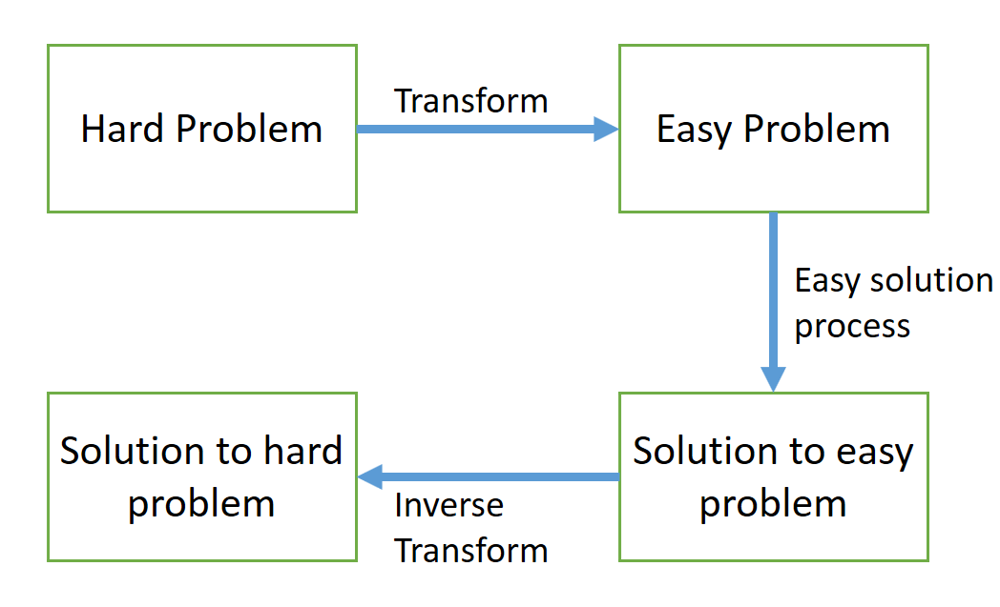
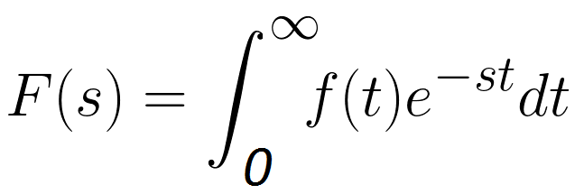
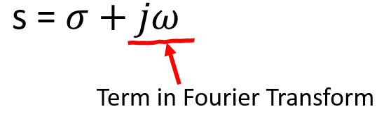
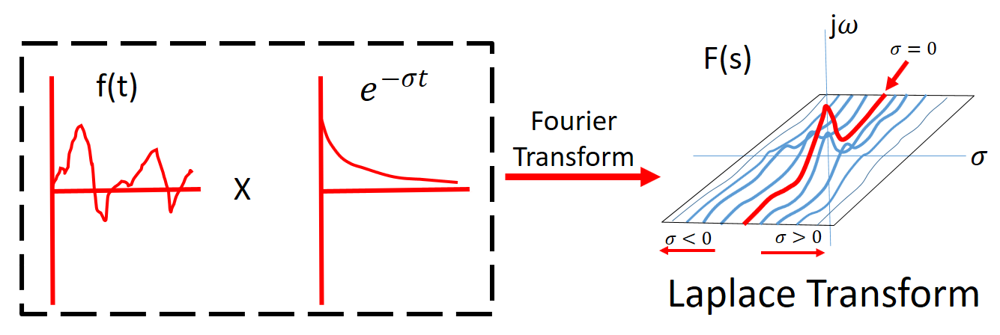
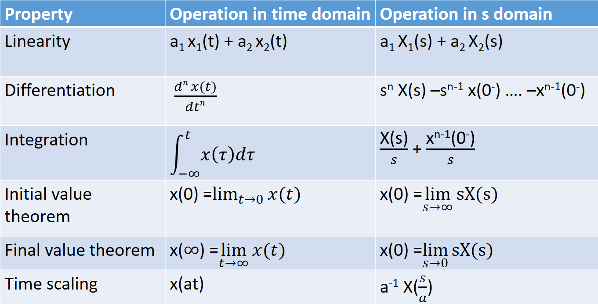
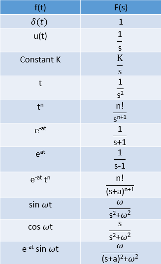

HOME BLOG EBOOKS ABOUT CONTACT SHOP
Before we explore Laplace transform, let’s look into transforms in general and why we need them.
Consider a simple problem: compute the value of x = 3.42.4. It is not easy to get the exact value using straightforward calculation. What we can do to make this problem solvable is to take natural log on both sides: now the equation becomes ln(x) = 2.4 ln (3.4). Now the value of ln(x) can be easily obtained and to obtain the value of x, all we have to do is to take the antilog of the value obtained. What we did was to take the hard problem, convert it into an easier equivalent problem. This is the very idea behind transforms. The concept of transformation is illustrated with the simple diagram below:

The Laplace transform is a well-established mathematical technique for solving differential equations. It is named in honor of the great French mathematician, Pierre Simon De Laplace (1749-1827). Like all transforms, the Laplace transform changes a function into another according to some fixed set of rules or equations.
The peculiarity of physical systems (LTI systems) is that they can be modeled by Differential equations. But solving Differential equations isn’t the easiest of tasks. What kind of transformation might we use with ODEs? Based on our experience with logarithms, ideally we would want a transformation, which allows us to replace the operation of differentiation by some easier operation, perhaps something similar to multiplication. Even if we don’t get this exactly, coming close might still be useful. This is exactly what the Laplace transform is used for. The Laplace transform, transforms the differential equations into algebraic equations which are easier to manipulate and solve. Once the solution in the Laplace transform domain is obtained, the inverse Laplace transform is used to obtain the solution to the differential equation.
The Laplace transform of a function f(t), denoted as F(s), is defined as:

This equation might look complex at first. But fortunately, most times you don’t need to use this equation, you can easily get away with knowing some standard results and a few properties.
Making sense of the Laplace transform and getting your head around its physical meaning isn’t the easiest of tasks. To understand the meaning of Laplace transform you need to have some idea about the Fourier series and the Fourier transform. If you look at Fourier transform equation, you can spot a striking similarity with the Laplace transform equation. The two equations are very similar, except that in the Laplace transform equation, term ‘s’ is used in place of ‘jω’. This similarity is because the Laplace transform was developed in order to overcome some limitations of the Fourier transform. From a mathematical standpoint, the Fourier transform is a subset of the Laplace transform. The connection between the two will become more apparent from the expansion of ‘s’ shown below,

Where σ is a real number.
The Laplace transform is basically the Fourier transform with an additional term (e-σt). Although the Fourier transform is an extremely useful tool for analyzing many kinds of engineering problems, it has some shortcomings that can be overcome, in many ways by the Laplace Transform.
For example, in control systems, the Fourier transform is not very useful for studying the stability of systems because, in studying instabilities, it is often necessary to deal with functions that diverge in time and we know that the Fourier integral does not converge for functions that diverge because such functions are not absolutely integrable.
Because of the exponential weighting (e-σt), the Laplace transform can converge for functions for which the Fourier transform does not converge. Depending upon the value of σ, which is the real part of s, a function (whose transform we are taking) is be multiplied by a decaying or expanding exponential. By tactfully choosing the value of σ, thereby multiplying the function with a decaying exponential, we can ensure that it becomes convergent. The region in the “s” plane where this infinite integral converges is called the region of convergence (ROC).

Intuitively, this means that the Laplace transform analyses the functions both in terms of exponentials and sinusoids. The center line in the s-plane (at σ = 0) corresponds to the Fourier transform F(ω).
Some of the basic properties of Laplace transform are:


Finding the Inverse Laplace transforms of functions isn’t terribly difficult. Most times Inverse Laplace transforms of functions can be figured out by inspection. The general method to find the Inverse Laplace transforms of functions is to express them as partial fractions and then make it into a convenient form and figure out which function’s Laplace each term is. Keep the various properties of Laplace transform in mind, it’s very handy.